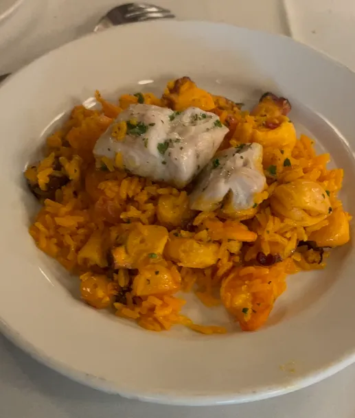
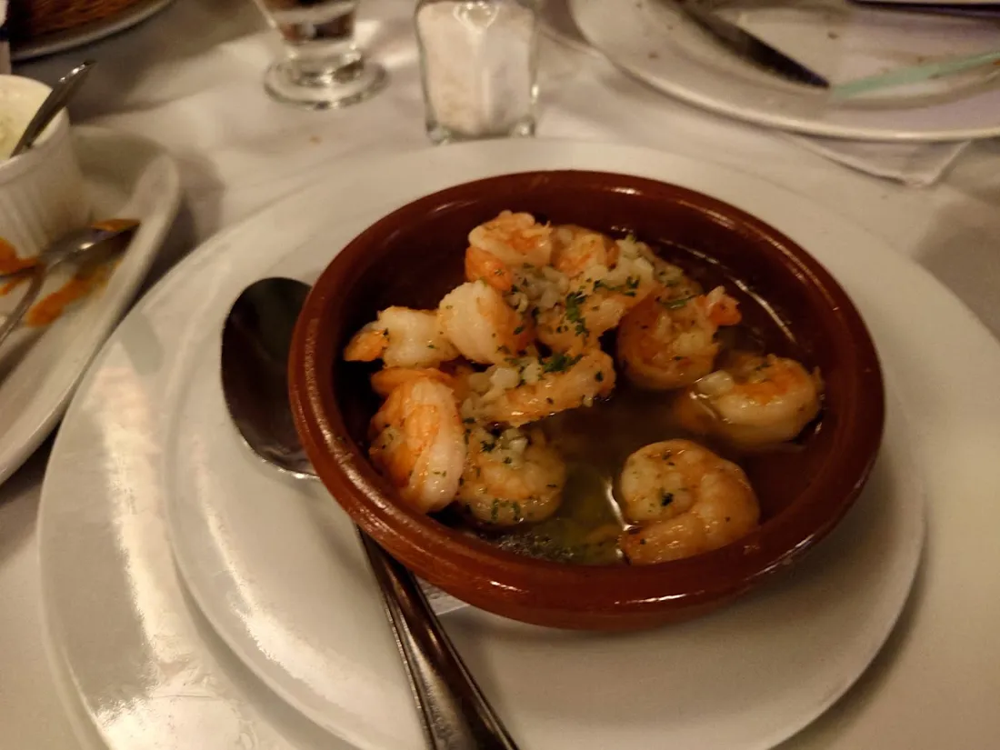
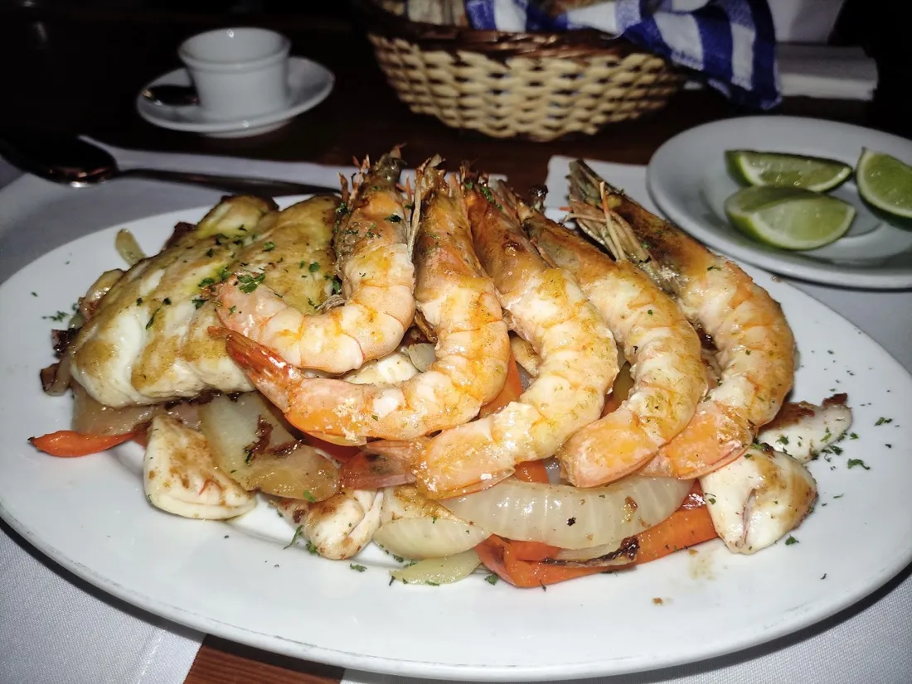
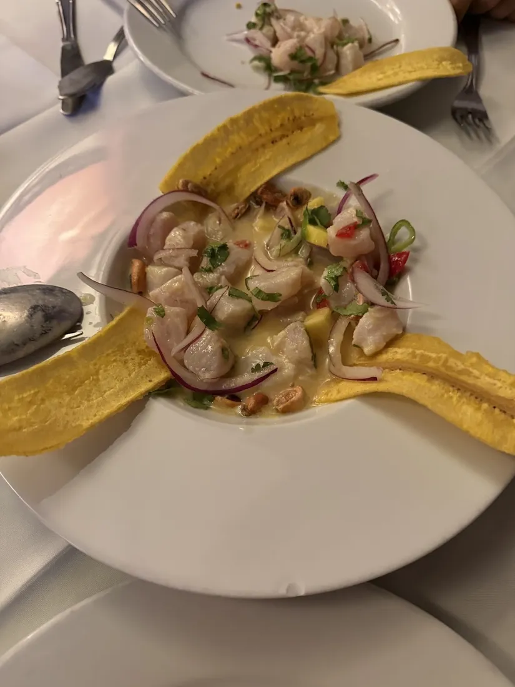
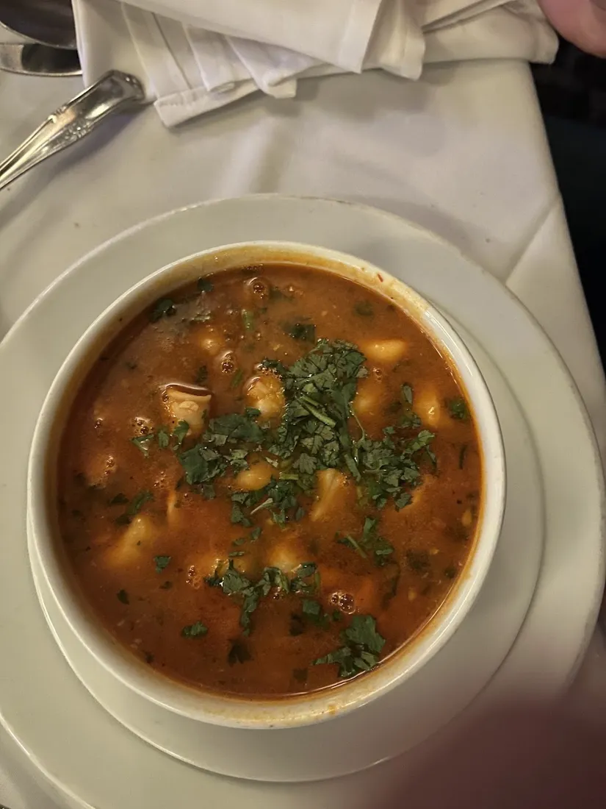
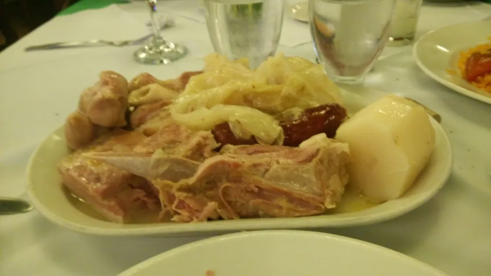
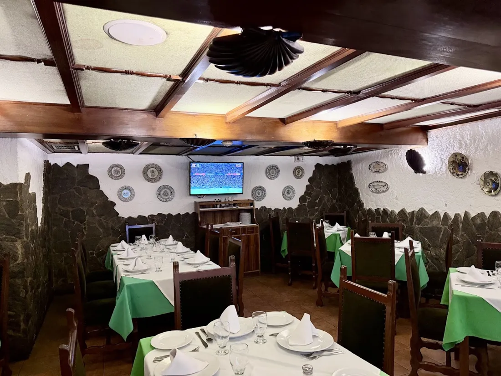

Reservas
Su mesa a bordo.
Cuántos son, qué día y a qué hora. El restaurante confirma por WhatsApp.
¿Cuántas personas?
¿Qué día?
¿A qué hora?
¿Celebran algo?
¿A nombre de quién?
Del mar a la mesa
Lo que llega a la mesa.
Fotos de sus clientes. El restaurante carga su carta completa con precios, en texto y no en PDF, para que se lea bien en el teléfono.







Música, baile y tradición
Aquí se celebra.
Vigas de madera, manteles verdes y mesoneros de toda la vida. Los clientes destacan la música, el baile y la atención.
87opiniones hablan de la música
35del baile
Dónde
3.ª Transversal, Altamira.
- Dirección
- 3.ª Transversal con 4.ª Avenida, Altamira, Caracas
- Estacionamiento
- Los clientes mencionan valet parking. Por confirmar.
Horario